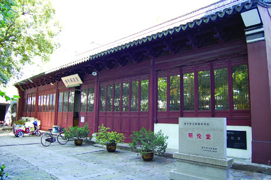

嘉兴市文物保护网 · 市级文物保护单位 · 2014-06-17 · 原文

明伦堂位于嘉兴市南湖区建设街道瓶山社区少年路72号，为旧时孔庙大殿，始建于元代，后历经重修，现存建筑为清同治三年（1864）嘉兴知府许瑶光重修。清光绪二十八年（1902）嘉兴地方名流陶葆廉、金蓉镜等发起在鸳湖书院、嘉兴劝学所附设图书馆，供公共阅览。两年后，正式成立嘉郡图书馆，馆址定于此，今为嘉兴图书馆报刊阅览室。明伦堂坐北朝南，五开间，面积340余平方米，面阔24.4米，进深14米。硬山顶，前三步后四步，明间为抬梁式梁架结构，瓜柱上用十字斗拱，除屋架仍为原构件外，屋面、门窗、地面等都经重修。堂内尚存石碑一块，碑高1.37米，宽0.73米。明伦堂是嘉兴孔庙的重要遗迹，是封建时代科举制度的实证，目前用途虽已改变，但仍发挥文化教育功能，具有较高的历史和科学价值。2000年公布为嘉兴市级文物保护单位。